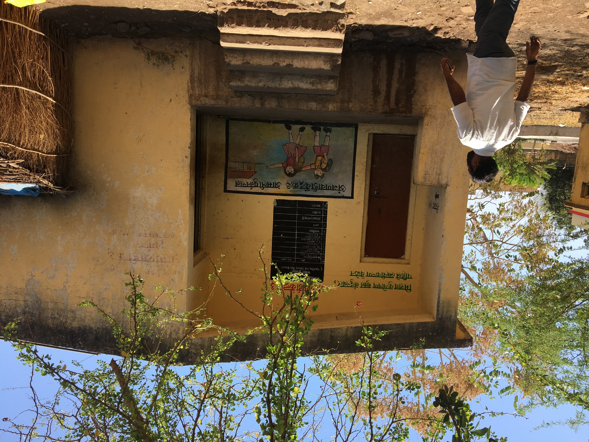

Teaching
Western Washington University
ANTH 301
Anthropological Theory
Fall 2026
The development of anthropological thought from the late 1800s to the present. Emphasis is placed on the major theoretical developments in the discipline.
ANTH 362
Anthropological Perspectives on Asia
Fall 2026
Ethnographic survey of the region, with attention to the diversity of human experience.
University of Oregon (Instructor/Graduate Teaching Fellow)
ANTH 220
Introduction to Nutritional Anthropology
Winter 2025
ANTH 165
Sexuality and Culture
Summer 2023
ANTH 114
Pirates and Piracy
Fall 2021
ANTH 331
Cultures India and South Asia
Winter 2022
ANTH 165
Sexuality and Culture
Spring 2022, Spring 2023, Fall 2024
ANTH 161
Introduction to Cultural Anthropology
Fall 2023
ANTH 220
Introduction to Nutritional Anthropology
Winter 2023
ANTH 110
Introduction to Traditional Ecological Knowledge
Fall 2023
ANTH 332
Human Attraction and Mating Strategies
Winter 2024
ANTH 114
Pirates and Piracy
Summer 2024
ANTH 165
Sexuality and Culture
Fall 2024
Sehgal Foundation (Capacity Building Sessions)
Session
Qualitative Tool Development
Summer 2018
Session
Community-based Participatory Methodologies
Winter 2018
Session
Using PRA (participatory rural appraisal) techniques in extension research and hands-on exercise
Summer 2019